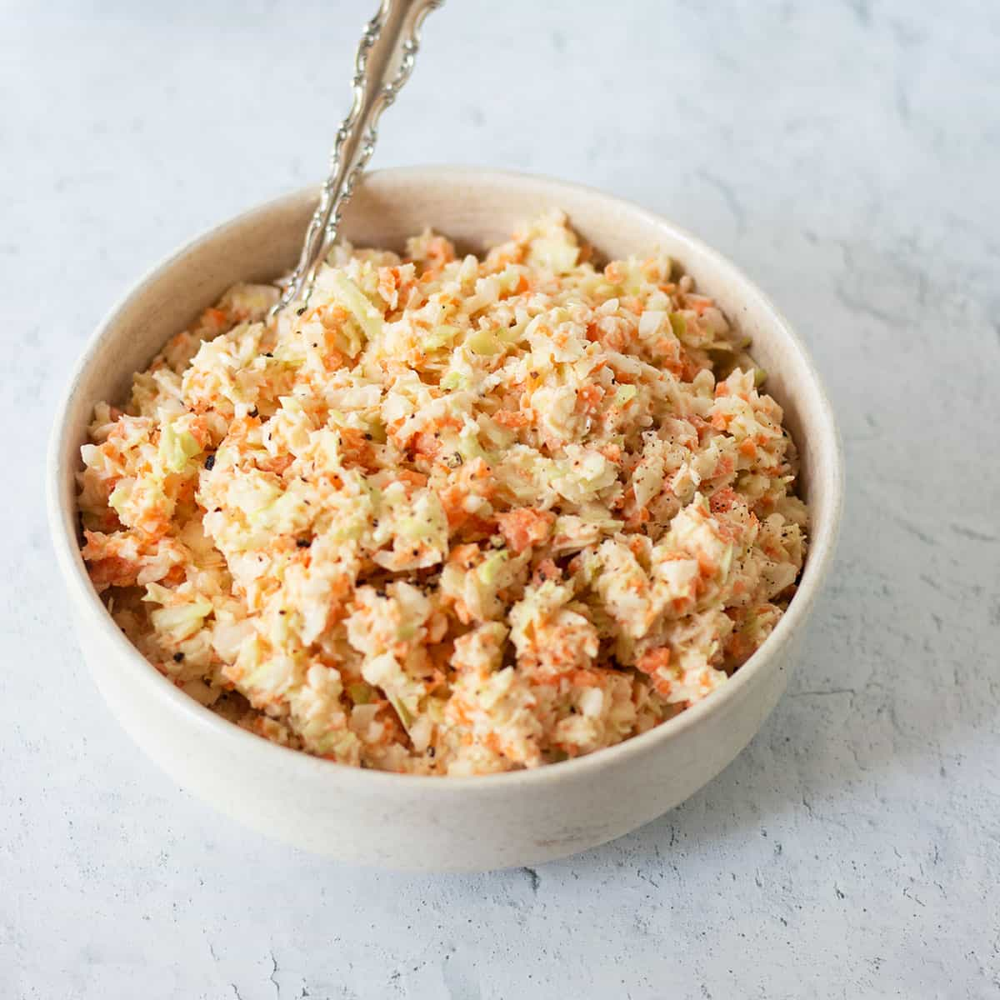

Home
Honey Dijon Slaw

Bright, tangy, and just sweet enough—this honey Dijon slaw brings a crunchy twist to classic sides.
Honey Dijon slaw offers a refreshing contrast to rich main courses. Crisp shredded cabbage and carrots are tossed with a light dressing made from honey, Dijon mustard, vinegar, and olive oil. The result is a balanced blend of sweet and tangy, with a touch of heat and a splash of freshness from herbs. Serve it chilled for the ultimate texture and flavor harmony.
Ingredients
- 4 cups shredded cabbage (green or mixed)
- 1 cup shredded carrots
- ¼ cup red onion, thinly sliced (optional)
- 2 tablespoons Dijon mustard
- 1½ tablespoons honey
- 2 tablespoons apple cider vinegar or lemon juice
- ¼ cup olive oil
- Salt and black pepper, to taste
- 1 tablespoon chopped fresh parsley or dill
Steps
- In a small bowl, whisk together Dijon mustard, honey, vinegar, olive oil, salt, and pepper until emulsified.
- In a large bowl, combine shredded cabbage, carrots, and red onion.
- Pour the dressing over the slaw and toss thoroughly until well coated.
- Fold in fresh herbs and adjust seasoning to taste.
- Cover and refrigerate for 30 minutes before serving to let flavors meld.
- Serve chilled as a side with grilled meats, sandwiches, or fried dishes.